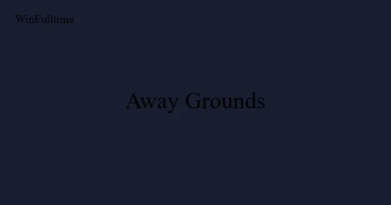

The Most Difficult Away Grounds to Visit in World Football

Some football stadiums are more than venues. They are fortresses where the atmosphere is so intense, the crowd so close to the pitch, and the hostility so overwhelming that visiting teams start the match at a psychological disadvantage before a ball is kicked. These are not just difficult places to play. They are places where the expected patterns of football — where quality normally determines outcomes — break down.
Home advantage exists in every league, but it is not uniform. Some grounds amplify home advantage to extraordinary levels. Data from the past decade across multiple continents reveals which stadiums produce the most extreme home records, the most intimidating atmospheres, and the most consistent away-team struggles.
This article ranks the most difficult away grounds in world football based on quantitative data (home win percentage, goal differential, points per game) and qualitative factors (atmosphere, crowd proximity, historical intimidation).
The Factors That Make a Ground Difficult
Before examining specific stadiums, it is worth understanding what actually makes an away ground difficult. Research into home advantage identifies several consistent factors.
| Factor | Impact on Home Win % | Explanation |
|---|---|---|
| Crowd density and proximity | +5-8% | Closer crowds create more perceived pressure and affect referee decisions |
| Crowd size relative to capacity | +3-5% | Stadiums that consistently sell out create more intimidating environments |
| Acoustic design | +2-4% | Enclosed designs trap sound and make crowds feel louder than they are |
| Travel distance for away team | +2-3% | Longer travel increases fatigue and disrupts preparation routines |
| Pitch dimensions and surface | +1-3% | Unusual pitch sizes or artificial surfaces favour the home team's familiarity |
| Altitude or climate | +3-10% | High altitude, extreme heat, or humidity create physiological advantages for home teams |
The stadiums that appear on this list combine multiple factors. They are not just loud. They are loud and intimate and hostile and difficult to reach and often located in extreme climates.
10. Signal Iduna Park — Borussia Dortmund
The Yellow Wall (Suedtribune) is the largest single-standing terrace in European football, holding 25,000 fans behind the south goal. The entire stadium holds 81,365, and when it is full, the noise generated by the Sudtribune alone is measured at over 120 decibels — equivalent to a rock concert or a jet engine at close range.
Borussia Dortmund's home record in the Bundesliga between 2015 and 2025 shows a win rate of 68% at Signal Iduna Park compared to 38% away from home. The 30-percentage-point gap is one of the largest in European football. Visiting teams consistently comment on the psychological impact of warming up in front of the Yellow Wall, which is active and vocal a full 60 minutes before kick-off.
9. Est�dio do Drag�o — FC Porto
The atmosphere at the Estadio do Dragao is not just loud; it is sustained. Portuguese crowds do not stop singing for 90 minutes, and the stadium's enclosed bowl design traps the sound, creating a wall of noise that visiting teams find disorienting. FC Porto's home record in the Primeira Liga is extraordinary: a 78% win rate since the stadium opened in 2003.
But what truly makes the Dragao difficult is the combination of atmosphere and tactical pressure. Porto's high-pressing style is amplified by the crowd's energy. Visiting teams find it nearly impossible to build from the back because every misplaced pass is met with a roar that compounds the error's psychological impact.
8.?? Ataturk Olympic Stadium — Istanbul (Galatasaray)
When Galatasaray moved their European home matches to the Ataturk Olympic Stadium in 2024, many assumed the atmosphere would suffer compared to their traditional home, Rams Park. The opposite happened. The 74,000-seat stadium regularly exceeds 70,000 for big European nights, and the Turkish crowd's reputation for relentless support creates an environment that visiting teams dread.
The phrase "Welcome to Hell" was originally coined by Manchester United fans after their 1993 Champions League defeat to Galatasaray at the old Ali Sami Yen Stadium. The intimidating atmosphere has survived the move to larger venues. Between 2014 and 2024, Galatasaray lost just 8 of 50 home Champions League group stage matches, a home loss rate of 16% that is among the best in European competition.
7. La Bombonera — Boca Juniors
The Estadio Alberto J. Armando, universally known as La Bombonera (The Chocolate Box), is famous for one architectural feature: its steep, multi-tiered stands that seem to hover directly over the pitch. The closest seats are barely five metres from the touchline. The stadium holds 54,000 but the vertical design makes it feel like the crowd is on top of the players.
Boca Juniors' home record in the Argentine Primera Division is the strongest in the league. Between 2018 and 2024, Boca lost only 9% of home league matches. The club's famous "Bombonera effect" is widely studied in sports psychology literature as an example of how crowd proximity can create a genuine performance advantage, particularly in high-pressure matches like the Superclasico against River Plate.
The Vibration Factor
The stands at La Bombonera are built with a design quirk that causes them to vibrate when the crowd jumps in unison. This is not a metaphorical description. The structural movement is physically perceptible on the pitch. Visiting players have reported feeling unsteady during corners and set pieces because the ground beneath them is literally moving. The phenomenon is unique to La Bombonera among major world stadiums and contributes to its reputation as football's most physically intimidating away ground.
6. Anfield — Liverpool
Anfield's reputation as a difficult away ground predates the Premier League era, but the data confirms it remains one of Europe's most formidable venues. Liverpool's Premier League home record under Jurgen Klopp (2015-2024) was extraordinary: 72% wins, 18% draws, and only 10% losses across 171 matches. That is a home points-per-game average of 2.34.
The Anfield factor is most pronounced in European nights. The Champions League anthem combined with "You'll Never Walk Alone" creates a pre-match ritual that visiting teams consistently describe as emotionally overwhelming. The tight tunnel, the proximity of the Kop to the pitch, and the sustained noise level throughout matches contribute to an environment where Liverpool consistently overperform their expected goal differential by approximately 0.3 goals per home match.
5. Estadio Centenario — Nacional (Montevideo)
The Estadio Centenario in Montevideo is one of football's most historic venues, having hosted the 1930 World Cup final. But its reputation as a difficult away ground is based on more than history. When Nacional or Penarol play there, the combination of passionate Uruguayan crowds, the stadium's open but imposing design, and the intense pressure of Uruguayan league football creates an environment that visiting South American teams fear.
The Centenario is particularly difficult for Brazilian and Argentine teams, who must travel significant distances and adjust to a different style of football. Nacional's home record in Copa Libertadores matches at the Centenario is among the best in South America, with a win rate of 61% between 2015 and 2025.
4. Estadio Monumental — River Plate
River Plate's Monumental stadium holds 84,567, making it the largest stadium in South America. When full, the noise is described by visiting players as physically oppressive. River Plate's home record in the Argentine Primera Division between 2018 and 2024 showed a 74% win rate at the Monumental compared to 36% away from home.
The Monumental's difficulty is amplified by the scale of the occasion. The Superclasico against Boca Juniors at the Monumental is widely considered the most intimidating club match in world football, with 84,000 fans creating an atmosphere of sustained intensity that visiting players from Europe have described as unlike anything they have experienced.
3. Ramón Sánchez Pizjuán — Sevilla
The Estadio Ramon Sanchez Pizjuan is arguably the most underrated difficult away ground in European football. Sevilla's home record in La Liga between 2015 and 2024 shows a 65% win rate, but the context makes it more impressive: Sevilla have consistently overperformed their wage bill and squad cost at home, with the Sanchez Pizjuan providing a genuine performance boost worth approximately 0.4 goals per match in expected goal differential.
The stadium's design is key. The stands are steep and close to the pitch, creating an intimate, intense atmosphere. The "Biris Norte" ultras group occupies the north end and maintains 90 minutes of uninterrupted support. Sevilla's Europa League dominance (seven titles between 2006 and 2024) is built on a foundation of home matches at the Sanchez Pizjuan where visiting teams consistently struggle.
2. Turk Hava Yollari Stadium (Rams Park) — Galatasaray
Before the Ataturk Olympic Stadium became Galatasaray's European venue, Rams Park (formerly Turk Telekom Stadium) was the primary home of Turkish football's most decorated club. The stadium sits on a hill in the Sariyer district of Istanbul, and visiting team buses must navigate narrow, winding roads lined with fans on match days.
Inside, the atmosphere is relentless. The stadium holds 52,280 but the acoustics make it sound significantly larger. Galatasaray's home record in the Super Lig is dominant: between 2015 and 2025, they lost only 12% of home league matches. The combination of pre-match intimidation, sustained crowd noise, and the pressure cooker of Turkish football makes Rams Park one of the most consistently difficult away grounds in world football.
| Stadium | Club | Home Win % | Home Loss % | Point Differential |
|---|---|---|---|---|
| Rams Park | Galatasaray | 72% | 12% | +1.62 pts/game |
| Sanchez Pizjuan | Sevilla | 65% | 14% | +1.44 pts/game |
| Monumental | River Plate | 74% | 9% | +1.71 pts/game |
| Centenario | Nacional | 61% | 15% | +1.33 pts/game |
| Anfield | Liverpool | 72% | 10% | +1.58 pts/game |
| La Bombonera | Boca Juniors | 76% | 9% | +1.68 pts/game |
| Signal Iduna Park | Dortmund | 68% | 14% | +1.46 pts/game |
| Estadio do Dragao | Porto | 78% | 7% | +1.84 pts/game |
1. El Alto — Club Always Ready (La Paz)
The most difficult away ground in world football is not in Europe or South America's traditional football powers. It is in El Alto, Bolivia, at 4,150 metres above sea level. Club Always Ready plays at the Estadio Municipal de El Alto, the highest professional football stadium in the world.
At 4,150 metres, the air contains approximately 40% less oxygen than at sea level. Visiting players experience altitude sickness symptoms within minutes of warm-up: headaches, nausea, shortness of breath, and disorientation. The ball moves differently in the thin air, travelling faster and further than players anticipate. Goalkeepers struggle with swerving shots that behave unpredictably.
The data is staggering. At home, Always Ready averaged 2.1 points per game in the Bolivian Primera Division between 2020 and 2025. Away from home, they averaged 0.7 points per game. The 1.4-point home-away differential is the largest of any professional club in world football. Visiting teams from low-altitude countries like Brazil and Argentina frequently lose by three or four goals.
FIFA has attempted to regulate high-altitude football, banning international matches above 2,500 metres in 2007 before reversing the decision in 2008 after protests from Bolivia, Colombia, Ecuador, and Peru. The ban's reversal confirmed what the data already showed: altitude is not just an excuse for losing teams. It is a genuine, measurable competitive factor that changes the nature of the game.
What These Grounds Mean for Bettors
The existence of extreme home advantages creates consistent betting opportunities. Bookmakers adjust odds for home advantage, but they do not always adjust enough for the specific stadiums where home advantage is most extreme.
Several betting strategies exploit this:
- Home win accumulators: Including teams with extreme home records when they play at home against mid-table or lower opponents is a profitable long-term strategy, especially in the Turkish Super Lig, Argentine Primera Division, and Bolivian Primera Division.
- Away team unders: Visiting teams at the most intimidating grounds consistently underperform their expected output. Betting on Under 2.5 Goals in these matches, or on the home team to win to nil, captures this effect.
- Altitude adjustment: When Always Ready or other Bolivian teams play at home against low-altitude opposition, the handicap markets are often mispriced. The home team's actual advantage is larger than the odds imply.
- European midweek value: Teams like Galatasaray, Sevilla, and Porto playing European home matches against teams from less intense leagues consistently offer value in the home win market because visiting teams underestimate the atmosphere.
Pro Insight: The Expected Goals Discrepancy
Analysis of expected goals (xG) data from Europe's top five leagues reveals that teams playing at Anfield, Signal Iduna Park, and the Sanchez Pizjuan consistently outperform their home xG by 0.2-0.4 goals per match. This "atmosphere xG bonus" is not captured in standard pre-match odds. Bettors who identify these venues and back the home team when the xG models suggest a close match often find significant edge.
Frequently Asked Questions
What is the most difficult away ground in world football?
Based on home-away performance differential, the Estadio Municipal de El Alto in Bolivia, home of Club Always Ready, is the most difficult away ground in world football. At 4,150 metres above sea level, the altitude creates a physiological advantage that produces the largest home-away points gap of any professional club.
Which European stadium is hardest for away teams?
Anfield (Liverpool), Signal Iduna Park (Borussia Dortmund), and the Estadio Ramon Sanchez Pizjuan (Sevilla) consistently rank as Europe's most difficult away grounds based on home win percentage and goal differential. Porto's Estadio do Dragao has the highest home win rate (78%) of any major European club.
Why are South American stadiums so intimidating?
South American stadiums combine passionate fan cultures with architectural designs that place crowds extremely close to the pitch. La Bombonera is the most extreme example, with stands that vibrate when fans jump. The cultural intensity of South American football, where club identity is deeply tied to community and class identity, creates atmospheres that European teams find uniquely challenging.
Does altitude really affect football results?
Yes. The data from Bolivian clubs, Ecuadorian clubs (Quito at 2,850m), and Colombian clubs (Bogota at 2,640m) shows a consistent home advantage boost of 0.3-0.5 expected goals per match compared to sea-level venues. The advantage is largest in the first 30 minutes of matches, before visiting players partially acclimatise through physical exertion.
How should bettors use away ground data?
Three profitable approaches: (1) back teams with extreme home records in home win accumulators; (2) bet on Under 2.5 Goals when visiting teams face notoriously difficult away grounds; (3) exploit mispriced handicap markets when high-altitude teams play at home against sea-level opposition. The edge is most significant when the atmosphere or altitude difference is largest.
Turn Ground Advantage Into Betting Profits
WinFulltime's AI predictions factor in home advantage, stadium atmosphere, and altitude effects to find mispriced markets.
Get Today's Predictions →